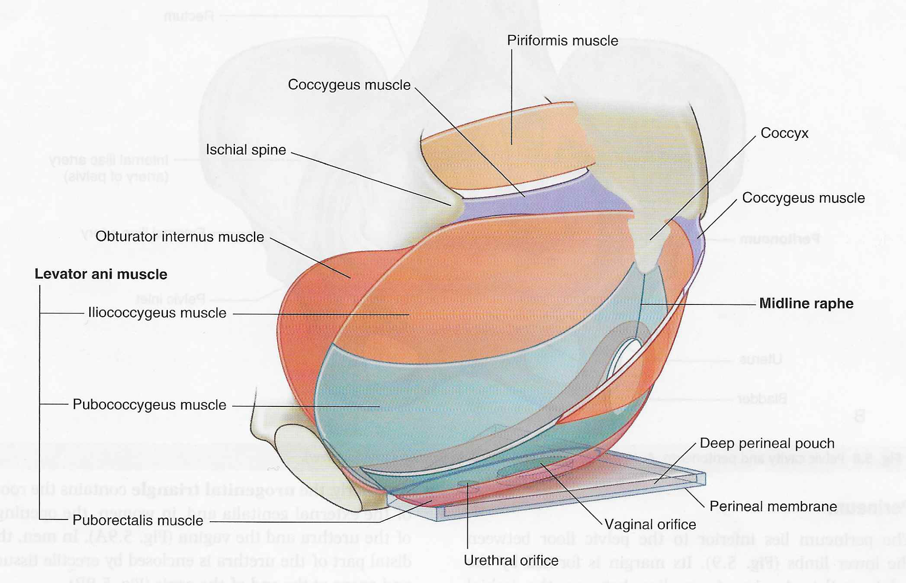

Pelvis and Perineum: Module 1 - Page 3 of 5
| Return to the view of the full pelvis. | |
| Add the psoas. |
The psoas major joins the iliacus in the pelvis, and passes under the inguinal ligament. Since they share an insertion on the lesser trochanter of the femur, in this area the two muscles are listed as the iliopsoas muscle.
What three (3) muscles make up the levator ani? |
|
|
The pubococcygeus muscle The puborectalis muscle The iliococcygeus muscle Since the levator ani is difficult to divide into its components, use the following representation to get a sense of where these components are positioned.  |
|